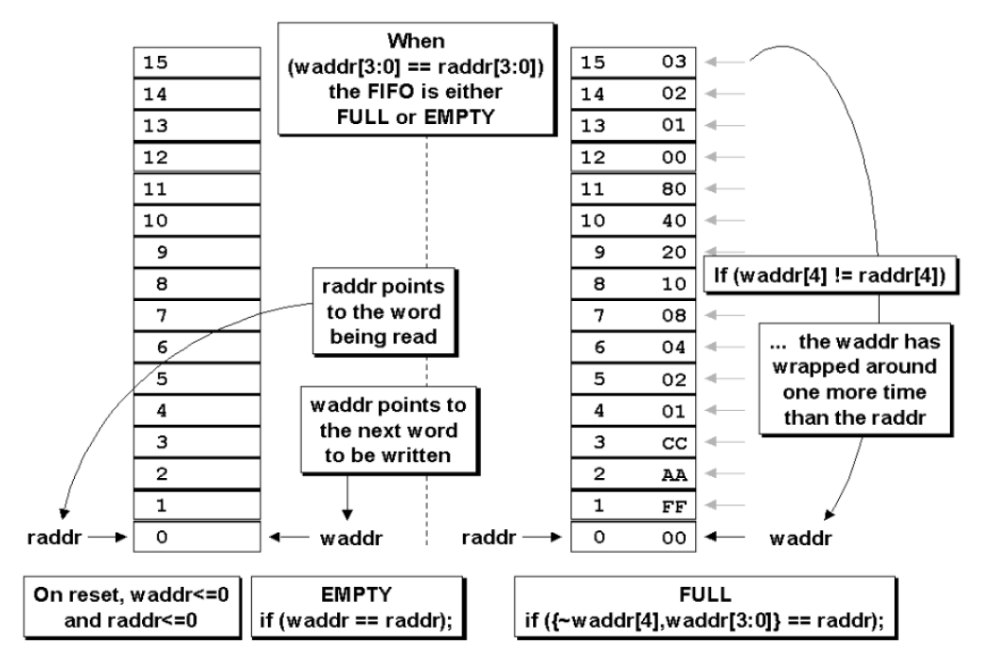

使用加法器计算7bit中1的数量，最少要用几个？
关键在于明确1bit的全加器可以将3bits相加，得到两bit结果。答案：4个1bit全加器。
N分频，周期是原始clk的N倍。
怎么实现分数分频？
偶数分频器的实现简单，用计数器在上升沿或者下降沿计数，当计数器的值等于分频系数的一半或等于分频系数时，信号翻转。
如果不要求占空比为50%的话，也比较容易实现，如进行三分频，通过待分频时钟上升沿触发计数器进行模三计数，当计数器计数到邻近值进行两次翻转，比如可以在计数器计数到1时，输出时钟进行翻转，计数到2时再次进行翻转。即在计数值在邻近的1和2进行了两次翻转。这样实现的三分频占空比为1/3或者2/3。对于实现占空比为50%的N倍奇数分频，可以分解为两个通道：上升沿触发进行模N计数，计数选定到某一个值进行输出时钟翻转，然后经过（N-1）/2再次进行翻转得到一个占空比为非50%奇数N分频时钟；下降沿触发进行模N计数，到和上升沿触发输出时钟翻转选定值相同值时，进行输出时钟时钟翻转，同样经过（N-1）/2时，输出时钟再次翻转生成占空比非50%的奇数N分频时钟。将这两个占空比非50%的N分频时钟或运算，得到占空比为50%的奇数n分频时钟。
或者对于5分频，周期是原来的5倍，一共是10个边沿(包括上升沿和下降沿)，则每间隔5个边沿(上升沿和下降沿)输出信号翻转一次。
对于分数分频 N = M.D，其中 ) 是所需的分频比，M是分频比的整数部分，D 是分频比的小数部分。为了实现这个分频比，将 M 分频器连续运行$N_1$ 个周期，并且将M+1 分频器连续运行$(N_2$ 个周期，这样就可以实现整体的分频比为 N。
具体来说，假设 M 分频器的周期是 T，那么连续运行 $N_1$ 次 M 分频器相当于经过 $M \times N_1 \times T$ 的时间，M+1 分频器运行 $N_2$ 次相当于经过 $(M+1) \times N_2 \times T$的时间。当这两个时间加起来正好等于$N \times T$时，就实现了整体的分频比为 N。
这种方法通过控制 M 分频器和 M+1 分频器的工作次数，来间接控制整体的分频比，以实现对时钟信号的精确分频。
当分频比为 1.5\时，我们希望将输入时钟信号的频率降低到原来的 1.5 倍。这里整数部分 M = 1，小数部分 D = 0.5。
接下来，我们使用 (M) 和 (M+1) 分频器来实现这个分频比。具体步骤如下：
- 确定 (M) 和 (M+1) 分频器的工作周期： 假设输入时钟信号的周期是 (T)，则 (M) 分频器的周期仍然是 (T)，而 (M+1) 分频器的周期是 (T/2)。
- 确定 (M) 和 (M+1) 分频器的工作次数： 对于 (M) 分频器，我们需要让它连续工作 (1) 个周期，对于 (M+1) 分频器，我们需要让它连续工作 (1) 个周期。
- 计算整体分频比： 将 (M) 分频器运行 (1) 个周期的时间加上 (M+1) 分频器运行 (1) 个周期的时间，即 $M \times N_1 \times T + (M+1) \times N_2 \times (T/2)$。这个时间应当等于 $(N \times T)$，其中 $(N = 1.5)$。
- 求解 (N_1) 和 (N_2)： 代入参数，解方程组，求解 (N_1) 和 (N_2) 的值。
我们可以进行计算：
$$
M \times N_1 \times T + (M+1) \times N_2 \times (T/2) = N \times T
1 \times N_1 \times T + 2 \times N_2 \times (T/2) = 1.5 \times T
N_1 + N_2 = 1.5
$$
通过求解方程组，我们可以得到 $N_1 = 0.5$ 和$N_2 = 1$。
这样，当 (M) 分频器连续运行 (0.5) 个周期，(M+1) 分频器连续运行 (1) 个周期时，整体的分频比就是 (1.5)。

# 跨时钟域设计
四个跨时钟域的方法，其中有一个是用格雷码。
dmux是什么？
https://blog.csdn.net/Christmaso/article/details/126212044
FIFO
同步FIFO的一种实现方式是使用计数器对写入和读取次数进行计数，计数器达到最大值时为满状态，计数器为0时，为空状态。
异步FIFO需要通过比较读指针和写指针的值来判断，同样读写指针也都是计数器。指针为n位，其中$n-1$位用来索引地址，还有一位有时称为MSB标志位，两个指针的标志位相同，则位空状态，不同为满状态(不会出现读指针跑到写指针前面的状况，因为一旦读指针赶上后，FIFO空标志有效，不能再读取)。

这样的FIFO指针是二进制的，而有时n位计数器的每个位都可以同时更改（例如，二进制数7-> 8的值为0111-> 1000）。如果n位计数器的每个位都可能同时发生翻转,会导致一些潜在的问题。这种情况被称为”
同步问题
“(Synchronization Problem)。主要问题如下:
- 赃物传输(Metastability)问题
当两个时钟域之间的时钟信号不同步时,二进制计数值在传输过程中可能会出现短暂的无效状态。这个无效状态可能会持续一段时间,导致接收端无法正确采样和识别该值。这种现象被称为”赃物传输”。如果不正确处理,可能会导致设计失败或不确定的行为。- 临时不一致性
如果n位计数器的每个位都可以同时翻转,那么在短暂的时间内,计数值可能会处于一个未定义或不一致的状态。例如,对于一个3位二进制计数器,从”011”切换到”100”时,可能会短暂经历”000”或”111”这样的无效值。这种临时不一致状态可能会导致后续逻辑出错。- 代码丢失或重复
由于同步问题,可能会导致某些计数值被跳过或重复。例如,从”011”切换到”100”时,如果同步处理不当,可能会跳过”100”直接变成”101”。或者在从”011”切换到”100”的过程中,可能会短暂重复”011”的值。这种代码丢失或重复可能会影响后续的数据处理。
为了解决这些同步问题,通常需要采用一些同步电路设计技术,如握手机制、同步器(Synchronizer)、格雷码(Gray Code)编码等。这些技术可以确保在时钟域之间传输数据时,每一个比特位只有一个发生翻转,从而避免临时不一致的状态出现。合理的同步电路设计对于可靠的跨时钟域数据传输至关重要。
FIFO计数器指针的另一种常见实现方法是使用格雷码计数器。格雷码在每次时钟转换时只允许改变一位，从而消除了与试图在同一时钟沿同步多个变化信号相关的问题。
RAM和寄存器
在FPGA上实现RAM和寄存器时,它们会使用FPGA芯片上不同的硬件资源。
- RAM在FPGA上的实现:
- 通常使用FPGA芯片上内置的块RAM(Block RAM)资源实现较大的RAM存储器。
- 块RAM是由FPGA芯片上预制的静态RAM模块组成的。
- 一个FPGA芯片包含数量有限的块RAM资源,数量和大小因芯片型号而异。
- 寄存器在FPGA上的实现:
- 寄存器通常使用FPGA芯片上可编程的逻辑资源(如查找表LUT和触发器)来实现。
- 可编程逻辑资源可以配置为各种组合逻辑和时序逻辑电路,包括寄存器。
- 相比块RAM,FPGA上的可编程逻辑资源数量更多,可实现更多更小的分布式RAM和寄存器。
因此,在FPGA上实现较大的RAM存储器时,优先选用块RAM资源;而实现少量的小型寄存器时,则使用可编程逻辑资源。合理利用FPGA不同的硬件资源可以获得更优的性能、资源利用率和功耗特性。
在时序约束过程中,插入buffer(缓冲器)以满足setup和hold时间的要求,主要有以下几个原因:
- 减小数据路径的延迟
当数据路径的延迟过长时,可能会导致无法满足setup和hold时间的要求。插入buffer可以将较长的数据路径分割成多个较短的路径,从而减小每个子路径的延迟,有助于满足时序约束。 - 改善信号的时序特性
不同的信号在芯片内部的走线路径不同,可能会导致不同的延迟。插入buffer可以对信号进行重驱动和重新同步,从而改善信号的时序特性,减小路径之间的延迟差异。 - 提高时钟和数据的可靠性
当时钟路径和数据路径彼此交织在一起时,它们之间可能会产生较大的耦合,导致时序不确定性。插入buffer可以在时钟和数据路径之间形成隔离,降低耦合,提高可靠性。 - 驱动能力
当数据路径的负载较重时(如需要驱动较多的寄存器或者较长的走线),插入buffer可以提供足够的驱动能力,确保数据可以准确地传输到目的地。 - 时钟树构建
在构建时钟树时,需要在关键节点插入buffer,以确保时钟信号能够被正确地分布和驱动到整个芯片的各个部分。
总的来说,在时序约束过程中合理插入buffer,可以优化时序路径,减小延迟,改善信号完整性,提高可靠性,从而帮助满足setup和hold时间的约束要求。
bank interleaving是一种内存访问技术,用于提高内存系统的带宽和吞吐量。它的工作原理如下:
现代DRAM内存芯片通常被划分为多个独立的bank(内存库)。每个bank都有自己的行缓冲区,可以独立地执行内存访问操作。
bank interleaving通过将内存地址空间交错地映射到不同的bank上,使得对连续的内存地址的访问能够并行执行于不同的bank中。这样就可以在一个bank执行预充电操作的同时,访问另一个bank中已经就绪的数据。
具体来说,bank interleaving会根据特定的地址位对bank进行索引,将连续的地址交替映射到不同的bank。比如假设有4个bank,可以使用地址的最低2位作为bank索引,这样0x00、0x04、0x08…将映射到bank 0,0x01、0x05、0x09…将映射到bank 1,以此类推。
通过这种交错映射,访问连续地址时可以并发访问不同的bank,提高了内存访问的并行度和效率。bank interleaving在提升内存系统吞吐量方面很有效,尤其对于需要访问大量连续数据的应用(如图形处理、科学计算等)效果更加明显。
当然,为了发挥bank interleaving的优势,内存控制器需要能够智能地调度和管理对不同bank的访问请求,并尽量避免bank之间的访问冲突。所以它通常与内存控制器的复杂调度策略相结合。
multi banking
## 秋招
## 八股：